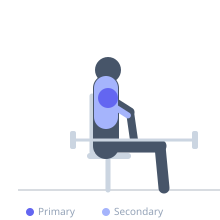
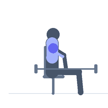

Exercise guide / Seated Military Press from Rack Pins
Seated Military Press from Rack Pins
The seated military press from rack pins starts from a dead-stop position with the barbell resting on safety pins set at approximately chin height, eliminating the stretch reflex from the eccentric phase. The lifter must generate maximum force from a full dead stop at the bottom of the press, training rate of force development and pure starting strength in the overhead pressing pattern. It is primarily used to overload the sticking point of the standard seated overhead press and to develop explosive pressing force.
Primary muscles
deltoid anterior
deltoid lateral
Secondary muscles
triceps brachii
trapezius upper
Stabilizers
erector spinae
Equipment
No Equipment (Bodyweight)


Starting position
- Sit on a bench inside a power rack. Set the safety pins at chin height. Rest the barbell on the pins. Grip the bar slightly wider than shoulder width. Feet flat on the floor.
Setup
- The bar starts on the pins — there is no unracking. Set the spotter arms or pins so the bar rests at the correct height for the sticking point. Load heavier than your standard overhead press since the range is shorter.
Steps
- Step 1: Sit under the bar resting on the pins. Grip the bar.
- Step 2: Take a breath and brace the core hard.
- Step 3: Press the bar explosively from dead stop — no dipping under the bar first.
- Step 4: Press to full lockout overhead.
- Step 5: Lower the bar under control back to the pins. Release the tension. Reset and repeat.
Coaching cues
- Dead stop — full reset on the pins between reps
- Explosive drive off the pins
- Lock out completely overhead
Breathing
- Inhale and brace before each rep. Exhale through the press. Full reset between reps.
Range of motion
- Dead stop at chin height to full overhead lockout.
Tempo
- Explosive concentric, 2s eccentric
Common mistakes
- Not fully releasing the tension on the pins between reps — the dead-stop is the entire point
- Starting with the head in a compromised position — ensure the bar can clear the face on the way up
Safety
- Set the spotter pins correctly — the bar must rest securely between reps
- Advanced technique — requires established overhead pressing mechanics before using pin press variations
Training
- strength: 1–5 reps
- strength: 3–6 sets
- Rest: {'strength': 300}